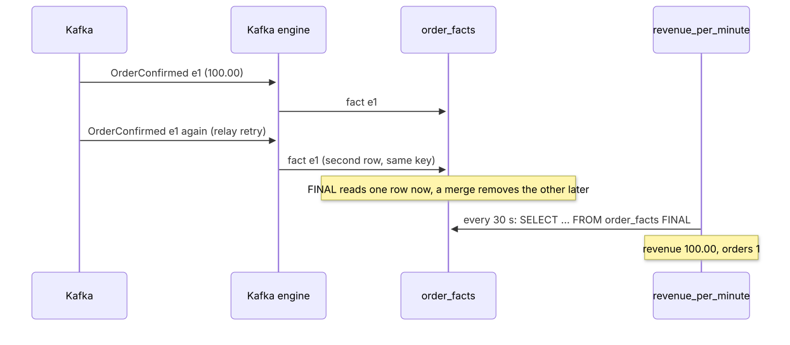

analytics: low-level design#
Part of the e-commerce system design. Animated version: walkthrough.
1. Responsibilities#
| Does | Does not |
|---|---|
| Keep every order event as a fact for 25 months | Serve the shop: nothing on the request path reads ClickHouse |
| Show revenue per minute within a minute of an order | Replace the order database as the record of truth |
| Daily revenue, orders, cancellations, average order, distinct customers | Store personal data (customer ids are hashed) |
| Keep unreadable messages for inspection | Stop ingesting because of one bad message |
2. Guarantees#
| Guarantee | How |
|---|---|
| Exact numbers despite duplicate deliveries | Facts share an event_id in the sorting key; ReplacingMergeTree collapses duplicates and FINAL reads are exact before the merge happens. Rollups are refreshable views computed from order_facts FINAL, so they never add a duplicate twice |
| Fresh | Kafka engine flushes every second; revenue_per_minute refreshes every 30 s over the last two days |
| One bad message never blocks | kafka_handle_error_mode = 'stream' turns unparseable messages into rows with _error; non-throwing …OrZero/OrNull parsing; anything incomplete goes to order_event_errors |
| Read-only dashboards | Grafana connects as grafana, which has SELECT on analytics.*, a read-only profile, 30 s and 2 GB limits |
| Rebuildable | All state derives from Kafka (7 days) and, beyond that, from the order database export |
Why not the insert-triggered SummingMergeTree rollup: a materialised view fires on every insert, so a re-delivered event would
add its revenue twice; the duplicate fact disappears only later, at merge time, and the rollup never learns about it.
3. Module diagram#

4. Interaction diagram#

5. Sequences#
A duplicate delivery#

6. Data model#
Schema: 001_order_events.sql, 002_rollups.sql.
| Table | Engine | Key | Notes |
|---|---|---|---|
order_facts |
ReplacingMergeTree | (event_type, occurred_at, event_id), monthly partitions |
25-month TTL; customer_key = cityHash64(customerId) |
order_event_errors |
MergeTree | received_at |
30-day TTL; the raw message and the reason |
revenue_per_minute |
MergeTree, replaced every 30 s | (minute, currency) |
Last two days of confirmed orders |
orders_per_day |
MergeTree, replaced every hour | (day, currency) |
Placed, confirmed, cancelled, revenue, average order, customers |
7. Scaling and performance#
- Volume: at 100 orders a second (a sale peak), about 300 events a second: trivial for one ClickHouse node.
- Rollup cost:
revenue_per_minutescans two days of confirmed facts (a few million rows at peak) every 30 s;FINALis parallel across partitions.orders_per_dayscans all history hourly; past ~1 billion facts it should switch to anAPPENDrefresh of the last two days only. - Growth: add a replica (ReplicatedReplacingMergeTree + Keeper) for availability, then shards keyed by
event_idif needed.
8. Failure handling#
| Failure | Behaviour |
|---|---|
| Kafka down | Ingestion pauses; dashboards show the last data; consumption resumes from the committed offset |
| ClickHouse down | No effect on the shop; Kafka keeps 7 days; on restart the engine catches up |
| Bad message | Row in order_event_errors; ingestion continues |
| Refresh fails | The previous rollup stays; system.view_refreshes shows the exception; the next refresh retries |
9. Tests#
| Test | Kind | Proves |
|---|---|---|
tests/test_analytics.py |
The image + Kafka on a Docker network | Schema applies on first start; placed, confirmed (twice, same id), confirmed, cancelled and two bad messages → 4 exact facts and 2 error rows with reasons; no personal columns; revenue per minute 179.90 from 2 orders (duplicate counted once); daily row 1 placed / 2 confirmed / 1 cancelled / 2 customers; every dashboard query runs |
| Manual check (README) | Grafana 13.2 + plugin | Datasource healthy with the read-only user; dashboard provisioned into the E-commerce folder; the read-only user cannot drop tables |